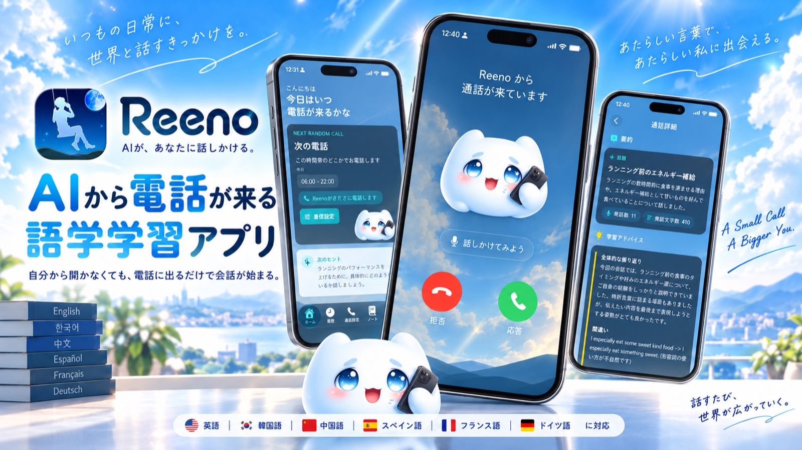
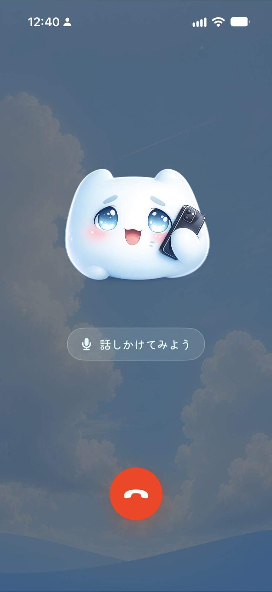
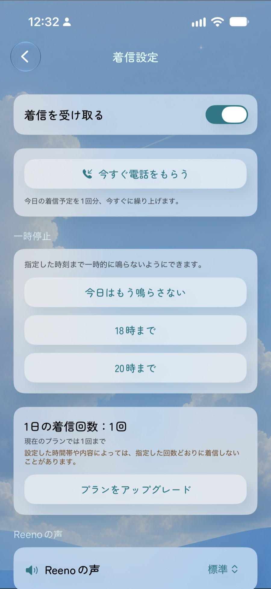
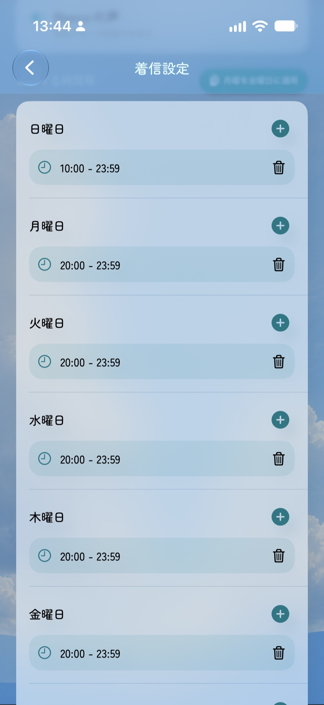
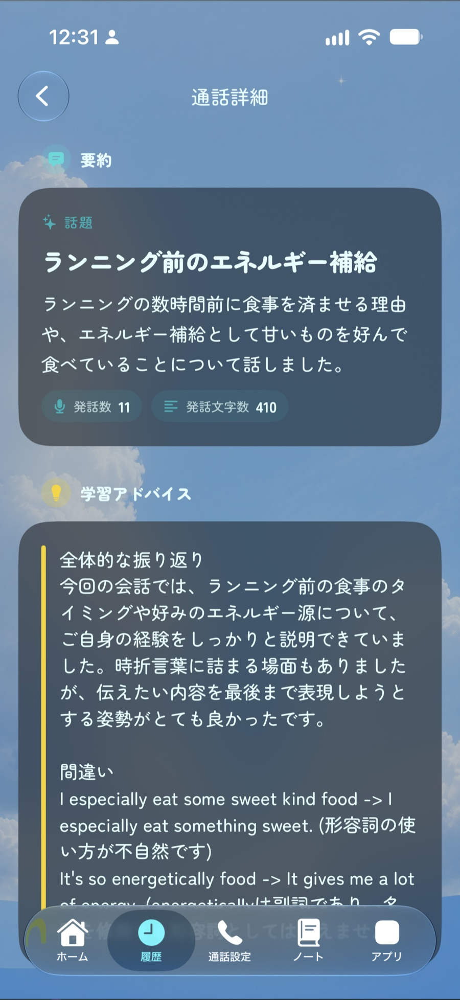
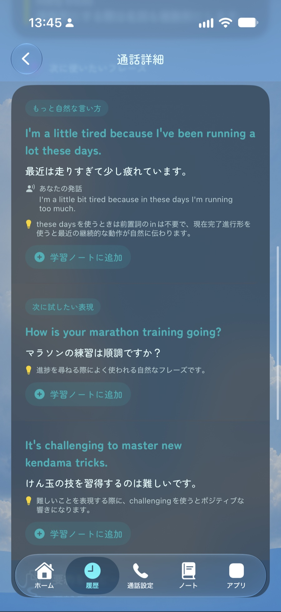

AIが、あなたに話しかける。
Reeno
自分からアプリを開かなくても、AIからの着信が外国語を話すきっかけに。会話を重ねるほど、あなたを理解するAIへ。
AIから電話がかかってくる語学学習
語学学習アプリをダウンロードしたものの、いつの間にか開かなくなっていた。Reenoは、そんな「続けられない」という壁に、AIの方から電話をかけるという発想でアプローチします。
ユーザーがAIを呼び出すのではなく、AIから着信が届く。電話に出るだけで会話が始まり、日常の中に自然と外国語を話すきっかけをつくります。
Reenoの特徴
- 設定した時間帯に、AIから電話がかかってくる 着信を受け取りたい時間帯を設定すると、その時間帯の中でAIから電話がかかってきます。「今すぐ電話をもらう」こともできます。
- 会話を重ねるほど、あなたのことを理解していく これまでの会話やユーザーについての情報を踏まえ、継続した文脈のあるコミュニケーションにつなげます。
- 通話したあとも、会話を振り返れる 通話後に会話内容の要約や学習アドバイスを確認できます。実際に話した内容を、その日のうちに次の学習へつなげられます。
- 7言語に対応し、母語も混ぜられる 英語・日本語・韓国語・中国語・スペイン語・フランス語・ドイツ語を練習できます。言葉に詰まったときは、母語を混ぜながら無理なく会話を続けられます。
電話がかかってくる
実際に話す
振り返る
自分から始めなくても、続けられる学習体験を。
GALLERY






最初の7日間は無料スタンダード 月額690円／Plus 月額1,540円／プレミアム 月額3,600円
App StoreでReenoを見るよくある質問
Reenoはどんなアプリですか？
設定した時間帯にAIから電話がかかってくる語学学習アプリです。電話に出ると外国語での会話が始まり、通話後に会話の要約と学習アドバイスを確認できます。
どの言語を練習できますか？
英語、日本語、韓国語、中国語、スペイン語、フランス語、ドイツ語の7言語に対応しています。
会話中に母語を使ってもよいですか？
はい。練習する言語だけで話し続ける必要はありません。言葉に詰まったときは、母語を混ぜながら会話を続けられます。
着信する時間を選べますか？
はい。曜日ごとに着信を受け取りたい時間帯を設定できます。すぐに練習したいときは「今すぐ電話をもらう」こともできます。
今日だけ着信しないようにできますか？
「通話設定」タブ →「着信設定」→「一時停止」→「今日はもう鳴らさない」を押してください。翌日の0:00まで着信を一時停止できます。変更は自動保存されます。
日付が変わると一時停止が終わり、設定済みの曜日・時間帯に沿って着信を受け取れる状態に戻ります。0:00に必ず電話がかかるわけではありません。今日のうちに再開したいときは、同じ画面の「今すぐ再開」を押してください。
今すぐReenoから電話をもらうにはどうすればよいですか？
「通話設定」タブ →「着信設定」→「今すぐ電話をもらう」を押してください。受け付けられると「数分以内に Reeno から電話がかかってきます」と表示されます。
この機能は、今日の着信予定を1回分、今すぐに繰り上げるものです。通話回数を追加する機能ではありません。利用できる着信予定がある場合は、設定した時間帯の外でもリクエストできます。
今日の着信予定が残っていない場合や、着信をオフ・一時停止にしている場合などは利用できません。着信を拒否した直後なども、次の予定が作られるまでボタンが表示されず、すぐには電話をもらえないことがあります。一時停止中は「今すぐ再開」で解除し、画面の案内を確認してください。
無料で試せますか？
最初の7日間は無料です。その後はスタンダードが月額690円、Plusが月額1,540円、プレミアムが月額3,600円です。
保存した学習ノートはどこで見られますか？
画面下の「ノート」タブを開くと、「話したいことノート」で保存した表現を見返せます。会話のふりかえりから保存した表現も、手動で追加した表現もここにまとまります。
見つからないときは、ノート画面の「会話する言語」が、保存したときの言語になっているか確認してください。表現をタップすると、その言語での言い方を表示できます。
会話レベル（Lv1〜Lv7）とは何ですか？
ホームに表示されるLv1〜Lv7の会話レベルは、Reenoとの会話の文字起こしをもとに、表現の使い方や会話のやり取りを推定した目安です。会話した回数だけで上がるものではなく、発音や話す速さは評価の対象にしていません。
- Lv1：単語で意思を伝える
- Lv2：短い文で自分のことを話す
- Lv3：日常のやり取りをする
- Lv4：経験や理由をつなげて話す
- Lv5：表現を使い分けて会話を広げる
- Lv6：相手に合わせて自然かつ的確に伝える
- Lv7：微妙な意味まで伝え分ける
ホームの会話レベルをタップすると、各レベルの説明や会話例を確認できます。会話の情報が少ないうちは表示されなかったり、会話を重ねると推定が変わったりします。
このLv1〜Lv7は、「会話プロフィール」で選ぶ「初心者・初級・中級・上級」とは別です。プロフィールの設定は、Reenoの話す速さ・言葉の難しさ・サポートの調整に使います。
Reenoからの着信に出られなかった場合はどうなりますか？
出られなかった電話は、「履歴」タブに不在着信として表示されます。ホーム画面の「ふりかえりを見る」からも履歴を開けます。会話をしていないため、その電話の会話の要約は作られません。
着信を逃したあと、設定した着信時間帯に1時間以上の余裕がある場合は、多くの場合もう一度電話がかかってきます。ただし、必ずかかってくるとは限りません。残りの時間帯、その日の通話回数、一時停止などの設定や通信状況によって変わり、ちょうど1時間後にかかるという意味ではありません。
Reenoの声を変えるにはどうすればよいですか？
「通話設定」タブ →「着信設定」→「Reenoの声」から、好きな声を選べます。声の変更は有料プランで利用できます。
各声の再生ボタンでサンプルを試聴できます。声の選択は自動保存されるので、保存中・エラーの表示が出ている場合は画面の案内を確認してください。サンプルと実際の通話では、会話の内容によって話し方が変わることがあります。
Reenoの話す速度をもっと速くしたいです。
「通話設定」タブ →「会話プロフィール」→「会話レベル」を開き、「初心者」を選んでいる場合は「初級」以上に変更して「保存」してください。初心者向けのとてもゆっくりした話し方から、より速い話し方に調整する設定です。
ただし、会話の状況やこれまでのやり取りに合わせてサポートを調整するため、変更してもゆっくりしたままの場合があります。速度を一定に固定する機能ではありません。ホームに表示されるLv1〜Lv7を変更する操作とも異なります。
Reenoと話す言語を変えるにはどうすればよいですか？
「通話設定」タブ →「会話プロフィール」→「会話する言語」で、話したい言語を選んで「保存」してください。英語、日本語、韓国語、中国語、スペイン語、フランス語、ドイツ語に対応しています。
ホームを下にスクロールし、「クイック設定」→「会話言語」から会話プロフィールを開くこともできます。
学習ノートを手動で追加できますか？
はい。「ノート」タブ → 右上の「＋」から追加できます。ノート画面で保存先の言語を選んでから「＋」を押し、覚えておきたいフレーズと、その言語での言い方を入力してください。必要に応じてタグを選び、右上の「保存」を押します。
会話のふりかえりに出てきた表現以外にも、次の電話で話したいことや、日常で見つけた表現を保存できます。翻訳機能を使わず、自分で両方の欄を入力して保存することもできます。
使い方が分からない・困ったときはどこで相談できますか？
アプリの設定画面 →「サポート」→「ヘルプ」を開き、困っていることを送信してください。操作していた画面、試した手順、表示されたエラーメッセージなどを書くと、状況が伝わりやすくなります。
機能改善の要望や、欲しい機能はどこから送れますか？
アプリの設定画面 →「サポート」→「欲しい機能」から送れます。追加してほしい機能や改善してほしい点に加え、「どんな場面で使いたいか」も教えてください。
DEVELOPER
-
長田 公喜（Koki Osada）
iOSアプリの企画・開発・運営を行う個人開発者。東北大学卒業後、医師として大学病院に勤務しながら、医療機器ソフトウェアを含むiOSアプリの開発も行っています。
Email: osadab6mb@gmail.com
Twitter: @math1729abc